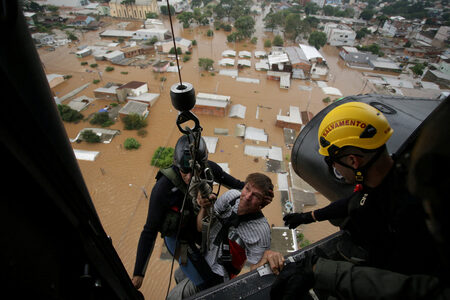
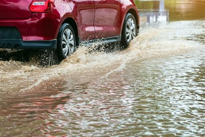
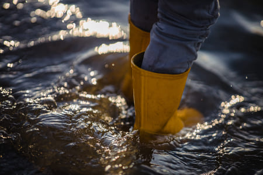

Entenda as causas, riscos e cuidados em situações de desastres naturais.
Por que as enchentes acontecem?
Entenda os fatores que levam às enchentes:
Impermeabilização do solo
Cidades cobertas de concreto, telhados e asfaltos impedem a absorção da água.
Crescimento desordenado
Os grandes centros urbanos crescem muito rápido consequentemente, não têm um planejamento adequado.
Sistema de drenagem
Não foram dimensionados para receber grandes volumes de água em pouco tempo.
Lixos descartados incorretamente
Esse lixo entope bueiros, tubulações e galerias responsáveis pelo escoamento, agravando ainda mais a situação.

Para Evitar Estes Desastres Naturais Como as Enchentes, É Preciso Adotar Medidas de Prevenção:
Planejamento urbano
Conservação ambiental
Redução da poluição
Uso de materiais permeáveis
Cisternas
Práticas agrícolas sustentáveis
Participação em grupos de voluntários que trabalham com a prevenção de desastres
Votação consciente
Redução do consumo de energia
Evitar desperdício de água
Ou seja, consumo consciente.
Principais Ações da Etapa de Redução do Risco Antes da Ocorrência de uma Enchente:
Programa de Vigilância em Saúde
Estruturar o programa de vigilância em saúde dos riscos associados aos desastres;
Normas e Comitê
Identificar e estabelecer normas para subsidiar a atuação; Instituir o Comitê de Saúde em Desastres para articular e organizar a atuação da Secretaria de Saúde em situações de desastres;
Mapeamento de Atores
Identificar e mapear atores e responsabilidades das áreas da Secretaria de Saúde e de outros setores que atuam em situações de inundações;
Articulação Setorial
Promover articulação intra e intersetorial;
Identificação de Ameaças
Identificar ameaças, vulnerabilidades e recursos para traçar o cenário para situações de inundações;
Políticas de Redução de Risco
Identificar, fortalecer e estabelecer políticas e normas para redução do risco de desastres no setor Saúde;
Planos de Preparação
Identificar planos de preparação e resposta a desastres; Elaborar o plano de preparação e resposta à emergência em saúde pública por inundação;
Estratégia de Comunicação
Estabelecer mecanismos para a gestão da informação; Estabelecer estratégia de comunicação (intra e intersetorial);
Capacitação e Treinamento
Promover capacitações, treinamentos e simulados para a atuação do setor Saúde em inundações;
Materiais de Orientação
Elaborar e divulgar material de orientação e educação em saúde;
Mapeamento da Rede de Saúde
Identificar e mapear a Rede de Atenção à Saúde, Rede laboratorial, e infraestrutura de vigilância em saúde;
Recursos Estratégicos
Medicamentos e insumos estratégicos necessários em situações de inundações (hipoclorito, vacinas, medicamentos, kits diagnósticos etc.);
Fonte: Elaborado pelo Vigidesastres – CGVAM/DSAST/SVS/MS, 2016.
“Para que na etapa de manejo do desastre as ações desenvolvidas sejam adequadas, é necessária a preparação prévia. É nesse período que todo o planejamento anterior vai se colocar em prática e todos os setores desenvolverão as ações de sua responsabilidade.”
O que fazer em caso de chuvas, alagamentos e enchentes?
Em situações de chuvas intensas e risco de alagamentos, é fundamental que moradores de determinadas zonas suscetíveis a cheias adotem medidas de prevenção para evitar situações de risco à vida e ao seu patrimônio.
Permanecer em Casa
Se puder, permaneça em casa.
Atenção aos Boletins Meteorológicos
Esteja atento aos boletins meteorológicos e alertas de emergência emitidos pelo Estado.
Seguir Instruções das Autoridades
Siga as instruções das autoridades locais e utilize as rotas de evacuação recomendadas.
Evitar Deslocamento para Áreas Afetadas
Evite o deslocamento para regiões afetadas.
O que fazer se estiver dirigindo durante uma inundação?
Não enfrente correnteza
Não enfrente cursos d'água com correnteza, pois você pode ser arrastado;
Fique atento ao nível de água
Caso seja surpreendido por uma inundação, fique atento ao nível de água observando os demais veículos;
Desligue o veículo
Se o nível da água tiver ultrapassado o meio da roda, desligue o veículo, desça e, a pé, procure um lugar seguro para permanecer;
Desça pela janela
Se o nível da água tiver ultrapassado o nível da porta, desça pela janela do carro, suba ao teto do veículo e pegue um cinto de segurança para se segurar até a chegada do resgate;
Dirija com atenção
Somente siga dirigindo, com a atenção redobrada, se o nível da água estiver abaixo do nível da roda.
Cuidados Pós-Enchente
Mesmo diante do recuo das águas no Rio Grande do Sul, o cenário ainda exige uma série de cuidados para garantir a segurança e a saúde da população afetada pelas enchentes. O alerta é do Ministério da Saúde, ao citar cuidados classificados pela própria pasta como indispensáveis durante a limpeza de casas e áreas atingidas e na remoção de entulhos.Nesse sentido, o Ministério da Saúde reforça as medidas de segurança para evitar doenças e acidentes, que podem ser provocados pela contaminação da água e dos alimentos, pela presença de animais peçonhentos e pelos riscos elétricos. Além disso, a higiene pessoal e do ambiente torna-se uma prioridade para prevenir surtos de doenças.

Cuidados com a Água
A água contaminada é um dos principais riscos após enchentes. Algumas doenças podem se propagar facilmente em decorrência da contaminação da água e de alimentos, como diarreia, cólera, febre tifoide, hepatite A, giardíase, amebíase, verminoses e leptospirose.“Não consuma alimentos que tenham tido contato com a água da inundação ou lama, incluindo alimentos embalados, enlatados ou alimentos perecíveis (como frutas, legumes e verduras). Antes de beber, é essencial adotar medidas para tornar a água segura para consumo.”

Para garantir que a água seja segura para consumo, a orientação da pasta inclui as etapas de filtragem e desinfecção: use filtros domésticos, coadores de papel ou panos limpos para filtrar a água. Em seguida, adicione duas gotas de hipoclorito de sódio a 2,5% (água sanitária) por litro de água, misture bem e aguarde 30 minutos antes de consumir. Caso não tenha hipoclorito de sódio, ferva a água por cinco minutos após o início da fervura. Deixe esfriar antes de consumir.
Cuidados com os Alimentos
Durante e após uma situação de emergência, é possível que os alimentos não estejam em condições adequadas para serem consumidos.
É importante descartar qualquer alimento que tenha tido contato com a água da enchente, incluindo embalagens seladas que tenham sido danificadas. É preciso descartar e não consumir alimentos embalados que tenham sido submersos nas águas das enchentes, incluindo latas de metal que estejam danificadas, amassadas ou enferrujadas; lavar e higienizar bem todos os utensílios de cozinha antes de reutilizá-los.
Prevenção de Doenças
O Ministério da Saúde recomenda evitar qualquer contato da pele com a água, já que a transmissão hídrica não precisa de machucado para servir como porta de entrada para eventos de contaminação. Veja abaixo as principais doenças transmitidas por água e alimentos contaminados:
Leptospirose
Causada por uma bactéria presente na urina de roedores e transmitida por água contaminada. Se você tiver febre, dores no corpo, especialmente na parte inferior das costas ou panturrilha, procure atendimento médico imediatamente.
Tétano
Pode ocorrer através de ferimentos causados por objetos contaminados. Mantenha as vacinas em dia e, ao manusear destroços, use luvas e botas para evitar lesões.
Quando as águas das enchentes começam a baixar, animais peçonhentos como escorpiões, cobras e aranhas procuram abrigo em locais secos, incluindo o interior de residências, ou locais de acúmulo de entulhos.
As recomendações do Ministério da Saúde incluem evitar o contato com esses animais, mesmo que pareçam mortos, e entrar em contato com autoridades competentes para a remoção segura.
Riscos Elétricos
A presença de água condutiva aumenta o risco de choques elétricos. Se houver qualquer sinal de eletricidade em áreas inundadas, mantenha distância e informe as autoridades. Outra orientação é evitar áreas alagadas com eletricidade exposta, incluindo proximidades de painéis solares, além de desligar a energia elétrica de residências caso seja necessário.
Contatos Úteis em Emergência
Por fim, o Ministério pede que a população afetada pelas enchentes em municípios gaúchos tenha sempre em mãos os seguintes números de emergência para rápida assistência:
Bombeiros
193
SAMU
192
Defesa Civil
199
Fontes: AGENCIA BRASIL/VALERIA AGUIAR; RECICLA.SA; Elaborado pelo Vigidesastres – CGVAM/DSAST/SVS/MS, 2016 e Google.